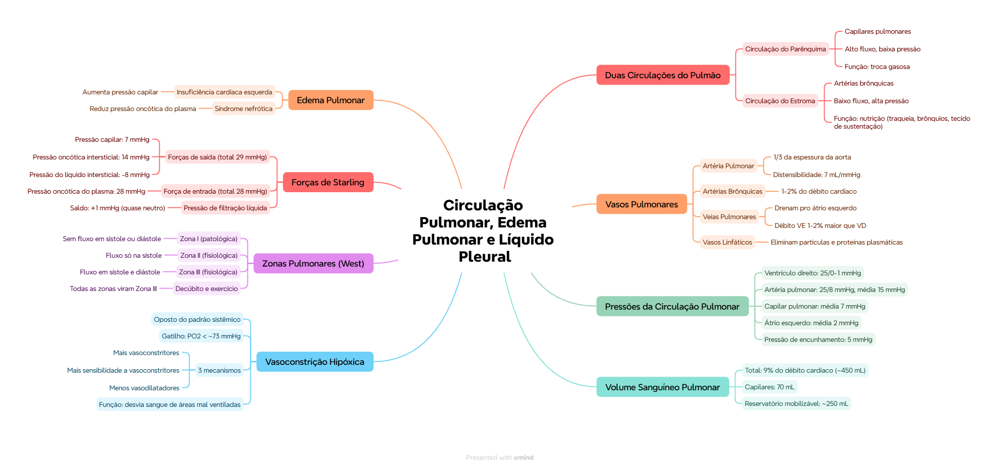

🎯 O que você vai conseguir fazer depois desse capítulo
Diferenciar a circulação do parênquima (pulmonar) da circulação do estroma (brônquica)
Nomear as pressões normais em cada ponto da circulação pulmonar
Explicar a vasoconstrição hipóxica pulmonar e seu gatilho
Diferenciar as 3 zonas pulmonares (West) por fluxo sanguíneo
Calcular a pressão de filtração líquida nos capilares pulmonares (Forças de Starling)
Reconhecer as principais causas de edema pulmonar
🔀 Duas circulações dentro do pulmão
O pulmão tem 2 circulações distintas: uma de alto fluxo/baixa pressão, e uma de baixo fluxo/alta pressão.
Circulação do Parênquima
Circulação do Estroma
Vasos
Capilares pulmonares (artéria/veia pulmonar)
Artérias brônquicas
Fluxo/Pressão
Alto fluxo, baixa pressão
Baixo fluxo, alta pressão
Função
Troca gasosa (sangue pouco oxigenado → oxigenado)
Nutre traqueia, árvore brônquica (até bronquíolos terminais), tecidos de sustentação e adventícia dos vasos pulmonares — sangue arterial sistêmico rico em O₂
📌 O que o professor cobra nesta seção: qual circulação é qual (parênquima=pulmonar/troca gasosa; estroma=brônquica/nutrição estrutural) — é a base conceitual de todo o capítulo.
🩸 Vasos pulmonares, brônquicos e linfáticos
Vaso
Características
Artéria pulmonar
Se estende 5cm além do VD, depois se divide em esquerda/direita. Tem apenas 1/3 da espessura da aorta. Grande distensibilidade: 7 mL/mmHg — se acomoda ao débito sistólico do VD
Artérias brônquicas
Transportam só 1-2% do débito cardíaco. Sangue rico em O₂, vasculariza tecido de suporte, tecido conjuntivo, septos, brônquios grandes e pequenos
Veias pulmonares
Drenam pro átrio esquerdo — por isso o débito do VE é 1-2% maior que o do VD (recebe o retorno das brônquicas também)
Vasos linfáticos
Eliminam partículas e proteínas plasmáticas
📊 Pressões da circulação pulmonar
Sistólica
Diastólica
Média
Ventrículo esquerdo
120 mmHg
80 mmHg
—
Aorta
120 mmHg
80 mmHg
93,3 mmHg
Ventrículo direito
25 mmHg
0-1 mmHg
—
Artéria pulmonar
25 mmHg
8 mmHg
15 mmHg
Capilar pulmonar
—
—
7 mmHg
Átrio esquerdo
—
—
~2 mmHg em decúbito (1-5 mmHg)
Pressão de encunhamento
—
—
5 mmHg (2-3 mmHg acima da atrial)
💭 Repare o contraste: o VD bombeia com a MESMA frequência que o VE, mas com pressão MUITO menor (25/0-1 vs 120/80) — a circulação pulmonar é, por design, um sistema de baixa pressão.
🫧 Volume sanguíneo pulmonar
Total: 9% do débito cardíaco, ou aproximadamente 450 mL. Distribuição: 70 mL nos capilares, e o restante dividido igualmente entre artérias e veias. Funciona como reservatório de ~250 mL — pode ser mobilizado em situações de necessidade (ex: hemorragia sistêmica).
🔵 Vasoconstrição hipóxica pulmonar
Diferente da circulação sistêmica (onde hipóxia geralmente causa vasodilatação), no pulmão a baixa PO₂ causa VASOCONSTRIÇÃO — um mecanismo inteligente que desvia o sangue de áreas mal ventiladas pra áreas melhor ventiladas.
Sangue oxigenado a 100%: PO₂ ~104 mmHg
Sangue oxigenado a 70%: se a PO₂ cai abaixo de ~73 mmHg, ocorre a vasoconstrição hipóxica
Por que acontece (3 mecanismos):
Maior produção de vasoconstritores
Maior sensibilidade a vasoconstritores
Menor liberação de vasodilatadores
🟢 Lógica funcional: se um alvéolo está mal ventilado (pouco O₂), não faz sentido mandar muito sangue pra lá — a vasoconstrição hipóxica redireciona o fluxo sanguíneo pra alvéolos melhor ventilados, otimizando a relação ventilação/perfusão.
📐 Zonas pulmonares (West) — vértice x base
A pressão sanguínea varia conforme a altura dentro do pulmão: no vértice, a pressão é 15 mmHg menor que no nível médio; na base, é 8 mmHg maior.
Zona
Fluxo na sístole
Fluxo na diástole
Tipo
Zona I
Não
Não
Patológica
Zona II
Sim
Não
Fisiológica
Zona III
Sim
Sim
Fisiológica
🏥 Detalhe importante: em decúbito e durante o exercício, todas as zonas pulmonares se tornam Zona III — a diferença de altura (e portanto de pressão hidrostática) deixa de importar quando a pessoa está deitada, e o exercício aumenta o débito cardíaco o suficiente pra perfundir tudo continuamente.
⚖️ Forças de Starling nos capilares pulmonares
O equilíbrio entre forças que empurram líquido pra FORA do capilar e forças que puxam líquido de VOLTA pro capilar determina se há edema ou não.
Força
Valor
Direção
Pressão capilar
7 mmHg
Saída
Pressão oncótica do líquido intersticial
14 mmHg
Saída
Pressão do líquido intersticial
-8 mmHg
Saída
Total forças extrínsecas (saída)
29 mmHg
—
Pressão oncótica do plasma
28 mmHg
Entrada
Total forças intrínsecas (entrada)
28 mmHg
—
Pressão de filtração líquida média
+1 mmHg
Saída (leve)
💡 Só a pressão oncótica do plasma (28 mmHg) puxa líquido DE VOLTA pro capilar — todas as outras 3 forças empurram líquido pra FORA. O saldo final é pequeno (+1 mmHg de saída), o que mantém o interstício pulmonar "levemente seco" em condições normais — margem de segurança contra edema.
💧 Edema pulmonar — principais causas
Insuficiência cardíaca esquerda — a causa mais comum. O VE não consegue bombear o sangue que chega, represando pressão retrógrada nos capilares pulmonares, aumentando a pressão capilar e empurrando o equilíbrio de Starling ainda mais pra fora
Déficit de proteínas por dano renal (síndrome nefrótico — perda excessiva de proteínas na urina) — reduz a pressão oncótica do plasma, a única força que puxa líquido de volta pro capilar, desequilibrando o balanço de Starling
✅ O que você deve lembrar
Pulmão = 2 circulações (parênquima=troca gasosa, alta fluxo/baixa pressão; estroma=nutrição, baixo fluxo/alta pressão). Hipóxia pulmonar causa VASOCONSTRIÇÃO (oposto do sistêmico).
⚠️ Erro comum
Achar que hipóxia causa vasodilatação no pulmão, como acontece na circulação sistêmica — é o OPOSTO: no pulmão, hipóxia causa vasoconstrição.
⚡ Questão rápida
Por que, em decúbito, todas as zonas pulmonares se tornam Zona III?
Porque a diferença de altura entre vértice e base (que gera a diferença de pressão hidrostática que define as zonas) deixa de existir quando o corpo está na horizontal — sem diferença de altura relevante, todo o pulmão fica sob condições de perfusão contínua (Zona III).
🧠 Autoexplicação
Por que faz sentido que a pressão de filtração líquida média nos capilares pulmonares seja tão pequena (+1 mmHg), comparada a outros capilares do corpo?
O espaço alveolar é extremamente sensível ao acúmulo de líquido — mesmo uma pequena quantidade de líquido no interstício ou nos alvéolos já compromete diretamente a troca gasosa (aumentando a distância de difusão entre o ar e o sangue). Diferente de outros tecidos do corpo, onde um pouco de líquido extra no interstício tem consequências funcionais limitadas, no pulmão isso ameaça a função vital de oxigenação. Por isso o equilíbrio de Starling pulmonar é ajustado pra manter uma filtração líquida quase neutra (+1 mmHg é quase zero) — isso cria uma margem de segurança grande: só quando esse equilíbrio é significativamente perturbado (como na insuficiência cardíaca esquerda ou na síndrome nefrótica) é que o sistema realmente falha e o edema pulmonar se manifesta clinicamente.
🩺 Caso Clínico Progressivo — Edema Agudo de Pulmão
Vamos acompanhar o Sr. Aristides, 71 anos, hipertenso, chegando ao PS com dispneia súbita. O caso evolui em 3 níveis — clica em cada um pra ver como as coisas vão se desenrolando.
Visão geral do capítulo em formato visual — ideal pra revisão rápida antes da prova. O conteúdo completo, com explicações e exemplos, está no Guia de Estudo.

🃏 Flashcards — SM-2 real + interface Anki
O sistema guarda, no seu navegador, quais cards você já sabe bem e quais precisam voltar mais cedo — cada vez que você avalia um card, ele recalcula quando ele deve voltar.
Cartão 1 / 0Dominados: 0
PERGUNTA
RESPOSTA
✅ Banco de Questões Comentadas
10 questões, do mais básico ao mais puxado. Escolhe uma alternativa, depois clica em "Ver comentário completo" — vale a pena ler até quando você acerta, porque o comentário explica cada alternativa, não só a certa.